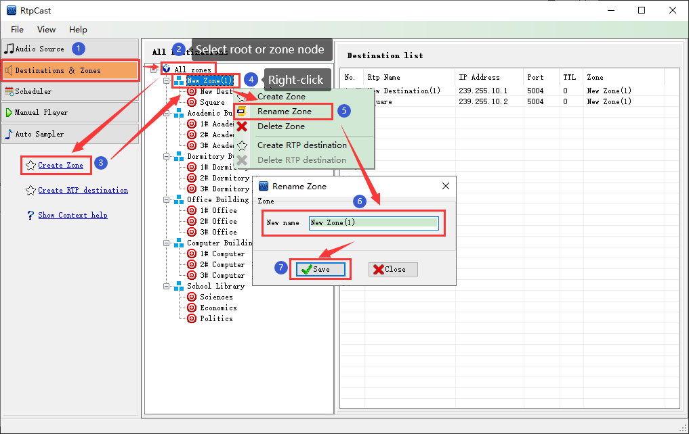

|  |
|
Introduction |
|
Destinations & Zones can effectively classify and organize the destination, which is convenient for users to operate and maintain. |
|
Operation |
| (1) According to the actual needs of the project, you can right-click the root node ("All zones") or a parent node on the organization structure tree of the middle panel, and then click the [Create Zone] menu item, or click the [Create Zone] in the left navigation panel to generate the zone node name "New Zone (x)" by default(x = 1,2,3...). At this time, you can right-click the node,and then [Rename] or [Delete] the zone node. |
| (2) You can right-click the zone node to create a sub zone (the maximum nested sub zone level is 5) or the operation of the destination (please see "Destination"). |